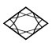
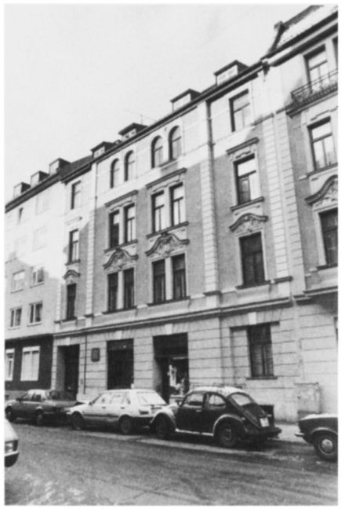
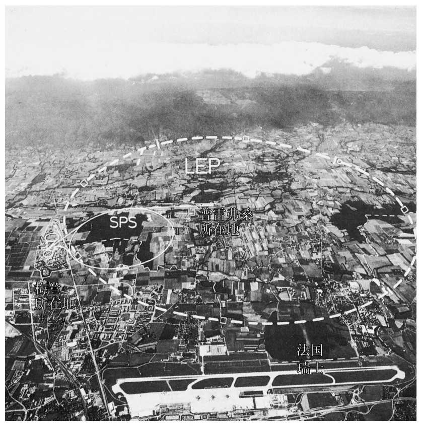
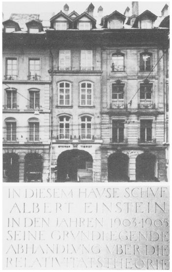
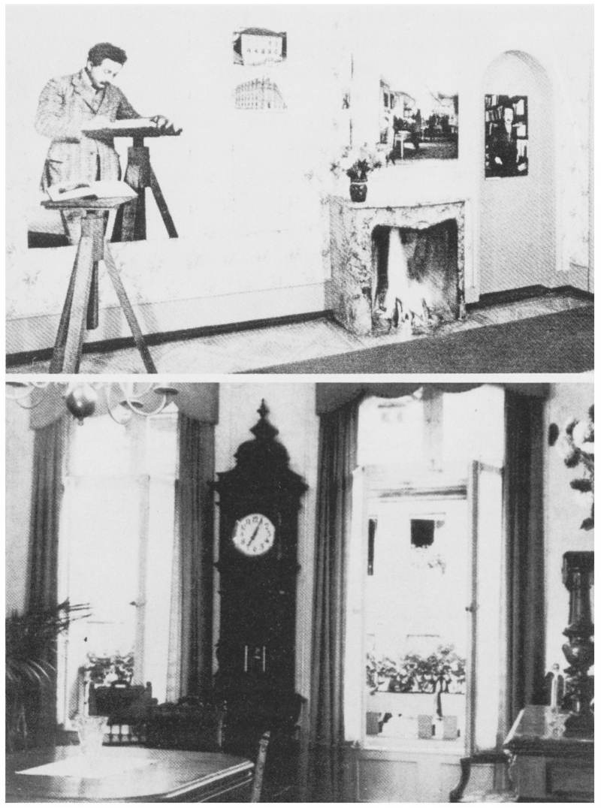
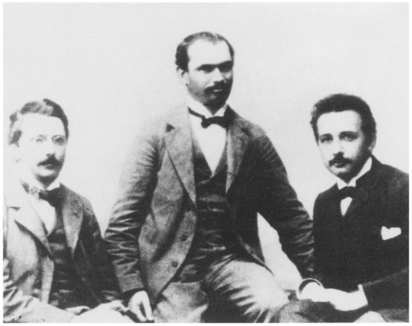

第五章两小时后，我和牛顿如约在三一学院的四方院碰面。我迫不及待地想知道我推荐的那篇文章他读得怎么样了。我到之后不久他就到了。从他所说的话中，我没法判断他反应如何。我有点忍不住地问：“这篇文章能满足你对光的好奇吗？”
“正相反，我的好奇反而增加了。有那么多的问题在我大脑中萦绕，恐怕还要花些时间我们才能讨论到相对论。”
我答道：“我可不这么看，那些问题中的大部分，特别是与光有关的那些，都直接或间接地与相对论有关。”
牛顿答道：“也许是这样，可现在我还没法断定。的确，读那篇文章时，我逐渐发现我最初的光理论所剩无几。爱因斯坦提出的在波动概念与我的理论之间的折中是令人难忘的成就。写《原理》时，我对这种折中有种模糊的想法，因为对我来说显然光的波动理论有它的优点。它对光的干涉和衍射现象提供了看似有理的解释。如果我对电学、原子与核物理学以及把光看作一种电磁波的思想再多了解一点……”
“亲爱的牛顿，没人会挑剔你没在你的《原理》中提出爱因斯坦的光量子假说。记住，爱因斯坦并不是靠纯粹推理得到他的理论的。由于数以百计的物理学家和工程师们已经积累了许多的实验事实，爱因斯坦才可能取得成功。这些人中最重要的是像你的同胞法拉第（Michael Faraday）或是德国物理学家赫兹这样的天才研究者。此外，实验和观测技术同时也得到了巨大的改进。没有这些进展，有关电和磁现象的这些实验可能就没法完成。在你所处的时代，都不可能做到那些。”
牛顿变得缓和了些：“是的，我承认在我那个时代研究技术尚有欠缺。你可能是对的；我写《原理》的时候，出现完整的光理论的时机还不成熟。顺便说一下，你朋友的文章使我对爱因斯坦好奇起来。请再多告诉我一些关于他的事。”
接着，我向牛顿简要地概括了这位伟大的物理学家的生平。我的听者显示出极大的兴趣，一直都没打断过我。

图5.1 爱因斯坦父母在慕尼黑阿德尔兹赖特大街12号的家，在战火洗礼中它得以保存下来。爱因斯坦父亲的工场就在后院。
1879年3月14日，阿尔伯特·爱因斯坦出生于德国南部的乌尔姆。一年后，他的家搬到慕尼黑。他的父亲赫尔曼·爱因斯坦（Hermann Einstein）和他的哥哥在巴伐利亚州首府开了一家小商店，经营电器设备。
在慕尼黑的勒伊特波尔德中学做学生的爱因斯坦，过早地对数学、自然科学和哲学表现出兴趣。15岁时，他与父母一起离开慕尼黑到了意大利。1894年，他父亲把公司迁到米兰。年轻的爱因斯坦为了取得上大学所必需的中学毕业文凭而去了瑞士；他在阿劳上了一年学，然后被著名的苏黎世联邦工业大学（ETH）录取为数理系学生。1900年他完成学业，获得了文凭，使他具有了“大学数学讲师”资格。
申请ETH的学术研究助教的职位失败后，爱因斯坦在几所学校做了两年代课教师，然后于1902年进入伯尔尼专利局做文职公务员。他在那个职位上一直呆到1909年。很多年后爱因斯坦说，在专利局的那段时间是他一生中最快乐的时光。
对他来说，那是做出重大发现、从而在自然科学中引起划时代变革的时期。1905年，爱因斯坦在德国期刊《物理学年刊》（Annalen der Physik ）上发表了几篇文章，就是这些文章开始给他带来国际声望。其中一篇“关于光的产生与转化的一个探索性观点”（A Heuristic View of the Generation and Transformation of Light），题目虽然朴实无华，可是这却为他的光子理论打下了基础，也使他获得了1921年诺贝尔物理学奖。另外两篇文章“论动体的电动力学”（Electrodynamics of Moving Objects）和“物体的惯性取决于它的能量吗？”（Does the Inertia of an Object Depend on Its Energy？），可谓狭义相对论的出生证。
1909年，由于他取得的成就得到承认，爱因斯坦获得了苏黎世大学理论物理学教授职位。1911年和1912年，他又接受了布拉格大学和母校ETH的教授职位。
爱因斯坦因接受柏林当时新成立的威廉皇帝学会极有声望的研究教授职位而达到了他大学生涯的顶峰。从1914年起，一直到他移居美国之前，他一直任职于此。
1933年希特勒（Hitler）上台执政之后，当时爱因斯坦碰巧在国外，于是他决定辞去在柏林的职位并且不再返回德国。他真的再也没回过德国，他于1955年4月18日在新泽西州的普林斯顿去世。他生命中最后二十年是在普林斯顿高等研究院度过的。
在与牛顿谈话时，我提到爱因斯坦在柏林那些年的一项重大成就——他创立了广义相对论，那是一种远远超越牛顿观念的引力理论。
完全可以理解，牛顿急切地想更多地了解广义相对论。不过，他同意了我的建议，即最好还是从1905年爱因斯坦发表的相对论的原始理论基础即通常所谓的狭义相对论开始。
停了一会儿之后，牛顿大喊：“我真想亲自和这位爱因斯坦谈谈！”
我被逗乐了，答道：“没有比这更好的了。我本人从没见过爱因斯坦。他1955年就去世了。”
牛顿笑了。“别忘了，年轻人，严格地讲我也并不在世了。但是我明白你的意思。我当然愿意到伯尔尼爱因斯坦曾经工作过的地方去看看。我想看一看他发展这种理论时所生活过的城市。这应该是可能的，毕竟，伯尔尼也是你的家乡呀。你也许感到奇怪，可我是非常认真的：我们一起去伯尔尼看看怎么样？还有，能坐飞机去岂不是更好？自从回到剑桥，逐渐习惯了现代生活，我就想坐飞机去旅行一次，那么何不就去伯尔尼呢？你说过你有几天空闲，那我们一块飞过去吧。”
牛顿的想法有道理。我很想和他一起到我的家乡走一趟。
“好吧，我们飞到瑞士去。我建议我们坐伦敦到日内瓦的直航，然后乘火车去伯尔尼。在日内瓦我们还可以访问CERN（欧洲核子研究中心）。”
我们确实这么做了。就在那个晚上我们离开三一学院去了伦敦。牛顿中途在切尔西一家旅馆住下。我回去告诉我的朋友们，我突然改变了计划，我不飞往美国了而是要回瑞士。他们非常惊讶。当然，我并没告诉他们我遇到了牛顿。
第二天早晨，在希思罗机场的瑞士航班服务台我见到了牛顿。他非常欣喜地告诉我，他已经来了两个多小时，观察了航班往来和机场的情况。显然，他像个孩子似的盼望着飞往日内瓦。
两小时后，大约11点，我们的飞机开始在日内瓦宽特兰机场降落。牛顿临窗而坐，对高耸着勃朗峰的阿尔卑斯山脉的全景着了迷。我指给他看我们下面山脉的狭窄的出口，在那里罗讷河突破了侏罗群峰的重围。不久我们又飞掠日内瓦的西南郊区。在我们降落之前，我正好有时间指给牛顿看侏罗山脉脚下CERN所在的区域。
虽然CERN研究中心离机场并不远，我们还是决定推迟对CERN的访问，先坐火车去伯尔尼。我们驶进瑞士首都的铁路干线火车站时已是午后。

图5.2 瑞士日内瓦的欧洲粒子物理实验室CERN鸟瞰。左侧的主建筑紧挨着超级质子同步加速器（SPS）环，该环是用来加速质子和反质子的。该环只能在照片上画一个圆来示意，这是因为该加速器实际上是处于地下隧道里。虚线表示安置大型正负电子对撞机（LEP）的地下环。
伯尔尼大学离火车站非常近。从火车站内乘电梯就可以直接到达我所工作的物理研究所。牛顿和我乘电梯上行到大学主楼前面的大广场，从这里可以看到伯尔尼城市和伯尔尼山地地区的山脉的壮观景色。这是个晴朗而又阳光明媚的日子，芬斯特拉峰和少女峰那被白雪覆盖的山顶闪闪发光。牛顿惊奇地凝视着这独一无二的景象；我告诉他这是他的同胞在100多年前“发现”的，他听了非常高兴，那是现代阿尔卑斯旅游业的开始。


图5.3 克拉姆小巷49号（Gasse意思是狭窄的街道），在专利局工作的那些年，爱因斯坦及其家人的住宅。就是在这里爱因斯坦提出了他的狭义相对论和光的本性的基本思想（参见纪念馆的牌子，左下）。爱因斯坦的旧寓所被保存下来作为一家小纪念馆。（承蒙伯尔尼的爱因斯坦协会惠允。）
我们在校区快速地转了一圈，途中经过了我的实验室。由于现在是假期，周围没有什么学生。我们下楼梯去阿尔贝格小巷，在那儿牛顿登记住进了车站附近的一家旅馆。
由于要到研究所去看一位同事，所以我和牛顿分手了。我们约好一起在阿尔贝格饭馆进餐，那是很受学生和教职员工们欢迎的饭馆。几个小时后我们离开餐厅时，美味的晚餐加上意大利美酒已经让我们进入一种兴奋状态。
牛顿不想等到第二天才去看爱因斯坦的故居。因此我带着牛顿来到熊苑广场，这是用伯尔尼的象征性动物熊命名的城市中心广场。从那儿我们沿着商业街经过都市剧院和有名的钟塔，来到我们寻找的克拉姆小巷。不久我们就发现我们已经来到了49号院门前，这就是20世纪初时爱因斯坦曾经住过的房子。这里就是相对论诞生的地方。
几乎没有人看不到爱因斯坦故居的正门，与伯尔尼市中心的很多地方一样，这里被很宽的拱廊保护着。入口对面的柱子上挂着个牌子，上面写着：“1903年至1905年，爱因斯坦就是在这所房子里创作了他关于相对论的奠基性论文。”爱因斯坦的寓所在二层。20世纪70年代，伯尔尼的爱因斯坦协会租下该寓所并将它改成了纪念馆。
牛顿希望能马上看到这些房间。这里只在白天对公众开放，可我早就预料到他会有这种愿望并做好了安排。我的一个同事是爱因斯坦协会的活跃分子，他给了我一把钥匙。碰巧这几周纪念馆不对公众开放，因此我借来钥匙用几天没什么麻烦。几分钟内我们就来到了爱因斯坦的寓所里。
爱因斯坦在伯尔尼时期的室内陈设品已荡然无存了。这里只有与他的生活有关的照片、图画和文档，还有零星的家具。牛顿暗示说，也许我想到城里转一转，因为这里对我来说没什么新鲜东西要看；然后他就开始看展品了。我明白他是希望单独在那儿呆一段时间。我离开这所房子沿阿勒河散步，经过了联邦大楼，又去了旧城区。
我再次踏上通往爱因斯坦寓所的狭窄楼梯时已是一个小时之后了。令我惊讶的是，牛顿并不是一个人。他正用英语和人愉快地讨论，对话者浓重的口音显示他是个德国人，或者也可能是个说德语的瑞士人。
看到我时，牛顿笑着说：“也许你还记得在剑桥时我告诉过你，我是多么希望能由爱因斯坦本人而不是你来给我介绍相对论。我们来伯尔尼是件好事。我来给你介绍我们的主人，爱因斯坦先生。”
我感到困惑，仔细地打量了一下牛顿的同伴。我眼前的这个人，真的是对面墙上照片中站在专利局旧式直立桌子前那个人的活着的形象。这的确是真的爱因斯坦，年纪大约是30岁。他中等身材，宽肩膀，蓬乱的黑发和蓄留着的一撮小胡子衬托着他的大脑袋。炯炯有神的棕色眼睛是他的主要特征。这个人与墙上照片的唯一差别是，他穿的是一套时髦的多少有些旧的灰套装。
我们握了握手；爱因斯坦以不无嘲讽的语气说，以这种方式遇到伯尔尼物理学教授是多么开心。（他必定是在暗示当年他与大学教师间的紧张状态。）除此之外，牛顿和爱因斯坦的表现就好像我们三人在爱因斯坦的寓所中相遇乃是世界上最自然不过的事情。由于我在剑桥就已巧遇了牛顿，因此在伯尔尼邂逅爱因斯坦对我来说并不特别惊讶。我觉得在离开剑桥之前牛顿就预料到了这次碰面，这就是他坚持这次旅行的最好理由。
爱因斯坦倒是从容不迫。他说：“我以前在伯尔尼时曾成立了一个学会，我们称之为奥林匹亚学会（Olympia Academy）。和其他这类机构不同的是，这个机构是有用的，至少对其成员是如此。最近我发现有机会重返伯尔尼一段时间，可我却没想到会在我的寓所里见到牛顿。我亲爱的牛顿，你愿意成为我们学会的一员吗？”
牛顿答道：“太愿意了，只要你能给我讲些关于相对论的东西。我认为在这个城市里呆上几天，我们三人彼此会了解很多。为此我提议，我们恢复你们的老奥林匹亚学会，这会给我们的聚会以一个正式标志。”
我当然不会反对，尽管我确实感到与这两位物理学巨匠为伍有点胆怯。在这最后的1小时里，在伯尔尼的克拉姆小巷我们恢复了奥林匹亚学会。我们用爱因斯坦设法制造的一瓶蒙特普尔恰诺红葡萄酒庆祝了一番。
时间已经太晚了，于是我们决定去休息，明天早晨在此处爱因斯坦的寓所里碰头。我把牛顿带回他的旅馆，爱因斯坦和我们一起走了一段后就独自走了。显然今晚他不会回他的寓所，那里甚至连张床也没有。
第二天早上10点，我和牛顿到了克拉姆小巷49号，发现爱因斯坦正在等我们。我们为学会的第一次会议做好了准备。爱因斯坦对我说：“我和牛顿都处于类似的处境，我们俩都是突然间被移植到这个时间空隙里的。许多日常的事情如今在我看来却不可思议，不过与牛顿相比我倒还好一些。从我最初在伯尔尼到现在的间隔比牛顿相应的时间跨度要短多了。过去这几天我试图弄清这段时间究竟发生了什么事。我所专注的自然是物理学方面的，我得益于充分利用物理系的图书馆，不过我承认我还没取得多少进展。现在我告诉你这些是因为，我担心在我们的讨论中牛顿会提些我没法回答的问题。我要靠你来帮我解决。”

图5.4 伯尔尼的奥林匹亚学会创立者。从左至右分别为：哈比希特（Conrad Habicht）、索洛文（Maurice Solovine）、爱因斯坦。（承蒙伯尔尼的爱因斯坦协会惠允。）
当然，我同意做我力所能及的事。“首先，牛顿想了解更多关于相对论的东西。在这一点上你的回答将是他最需要的。我们何不请艾萨克爵士开始呢？”